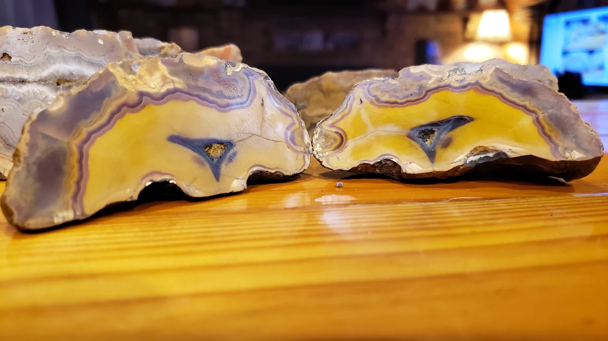
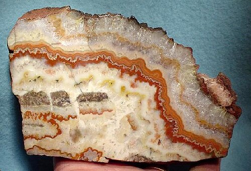

Agat
Agat to kamień wielokolorowy: niektóre są czarne z białymi paskami lub okręgami, inne mają żółte żyłki, krwiopodobne plamy, koral-czerwone kolory lub postacie lasów i zwierząt. ¹ ² ³ ⁵ ⁶ Jego zalety obejmują leczenie jadowite ukąszenia, chroniące wzrok, wzmacniające noszącego i zapobiegające burzom; ⁴ ⁶ te cnoty należą do poszczególnych form i preparatów, jak przedstawiono poniżej.
Opis ogólny
Opis
Agat przybiera wiele barw i figur w zależności od rodzaju i miejsca powstania. Powszechna forma Sycylijska jest czarna, przecięta białymi żyłkami lub pierścieniami. ¹ ³ ⁶ Inne formy to koral, czarne z żółtymi żyłkami, różnorodne w krwiste plamy lub z motywami lasów, zwierząt, kwiatów, ptaków, i ludzkie obrazy. ¹ ⁵ Niebieskawy kamień z białym płaszczem zewnętrznym, porównywany do kopyt lub kości słoniowej i do Hiacynt, spotykany jest wśród Scytów; ² jego związek z agat jest niepewny.
Właściwości
Wszystkie agaty wzmacniają noszącego, nadają zdrową cerę, elokwencję, wdzięk i dobroć oraz pomagają mu pokonać niebezpieczeństwo. Sprawiają również, że ich nosiciel jest zatroskany. ⁵ ⁶ Jeden rodzaj po rozsypaniu na ołtarzu wydziela opary przypominające mirrę. ⁵ Kiedy czarno-biały obraz zostanie umieszczony pod głową śpiącego, przynosi wiele snów. ¹
W przypadku jadu pająka lub innego robactwa podgrzej kamień na słońcu lub na gorącej płytce i połóż go w bolącym miejscu. Podgrzej ponownie, przytrzymaj nad parującą wodą, a następnie włóż na chwilę do tej wody. Lniana szmatka zamoczona w wodzie i nałożona na ukąszenie wyciąga truciznę i leczy ranę. ⁴ Odmiany lwiokolorowe, Cretan czerwono-złote i Indyjskie mają dalsze zalety antidotum opisane w ich podtypach. ² ⁵ ⁶
agat podgrzewany przy gołej skórze sprawia, że posiadacz jest zdolny, rozważny, i rozważny w mowie. ⁴ Osoba cierpiąca na epilepsję lub szaleństwo może nosić go na skórze i używać wody, w której spoczywał kamień, do przygotowywania jedzenia i napojów. W przypadku padaczki umieść kamień w wodzie podczas pełni księżyca na trzy dni; ⁴ czwartego dnia usuń go, delikatnie podgrzej wodę, nie gotując, i używaj jej do wszelkich potraw i napojów, gdy księżyc będzie słabnąć. ⁴ Kontynuuj przez dziesięć miesięcy. W przypadku szaleństwa, gdy zbliża się choroba, rozpocznij to samo przygotowanie trzy dni wcześniej i używaj go do jedzenia i picia w czasie choroby; pięć miesięcy tej praktyki przywraca zmysły i zdrowie.
Aby przeszkodzić złodziejom, co wieczór noś dobrze widoczny agat przez długość i szerokość domu w kształcie krzyża. ⁴ Spalanie agat wytwarza opary, które zapobiegają burzom i wstrzymują przepływ rzek. ³
Grawerowanie
Grawerowane figury dodają kamieniowi wyraźnych zalet. ⁶
- Człowiek trzymający żmiję odpycha jej jad; wygraweruj go na Sycylii agat i umieść kamień nad nakłuciem lub zmiel go i wypij winem. ⁶
- Konstelacja Serpentarium wygrawerowana na Sycylii agat podwaja swoją siłę przeciwko truciźnie. ⁶
- Kogut lub trzy młode kobiety dają mężczyznom łaskę i władzę nad duchami powietrza oraz służą w sztukach magicznych. ⁶
- Kompletny skrzydlaty koń zapewnia zwycięstwo i rozwagę we wszystkich działaniach. ⁶
Odmiany
| Forma | Wygląd i miejsce | Cnota wyróżniająca |
|---|---|---|
| Czarno-biały ¹ ³ ⁶ | Sycylijski; czarny z białymi żyłkami lub kółkami. | Sny po umieszczeniu pod głową śpiącego; rodzaj Sicilian przeciwdziała również jadowi żmii i skorpiona. |
| Cretan czarno-żółty | Czarny z żółtymi żyłkami; ¹ Kreta. | Pokonuje niebezpieczeństwa, wzmacnia ciało, chroni przed przeciwnościami losu i sprawia, że noszący jest przyjemny, przekonujący, wymowny i ma dobry kolor. |
| Indian cętkowane | Różne jak krople krwi; ¹ Indie. | Zachowuje wzrok oraz przeciwdziała pragnieniu i truciznom; po spaleniu wydziela silny zapach. |
| Lwiego koloru ² | Scytyjski rodzaj. | Zmielony wodą i nałożony na dane miejsce, zapobiega jadowi ukąszeń żmij, skorpionów i tym podobnym truciznom. |
| kreteński czerwono-złoty ⁵ | Koral-czerwony, nakrapiany złotym pyłem; Kreta. | Liczniki połykali truciznę i ukąszenia jadowitych węży. |
| Indian figurowe ⁵ | Forma żył lasy i zwierzęta; Indie. | Gasi pragnienie, gdy jest trzymany w ustach i łagodzi zmęczone oczy; odstrasza także jadowite stworzenia, wzmacnia wzrok, zapewnia zwycięstwo i siłę oraz odpycha burze i błyskawice. ⁶ |
| Cretan koral podobny do ⁶ | koralopodobny, z żyłkami lub plamami; Kreta. ¹ | Wyostrza wzrok, gasi pragnienie, przeciwdziała truciźnie i dodaje wdzięku, elokwencji, trwałości i siły. |
Podtyp I: Czarno-biały Agat

Na zdjęciu odmiana onyks agat (źródło).

Czarno-biały agat przynosi sny, gdy zostanie umieszczony pod głową śpiącego. ¹ Rodzaj Sycylijski służy również przeciwko jadowi żmij i skorpionów: nałóż go na nakłucie lub zmiel i wypij w winie. ⁶
Podtyp II: Cretan Czarno-żółty Agat

Na zdjęciu widać czarny/żółty/karmazynowy agat (źródło).

Czarno-żółty Cretan pokonuje niebezpieczeństwa, wzmacnia organizm i chroni przed przeciwnościami losu. ¹ Nadaje noszącemu przyjemny wygląd, atrakcyjność i elokwencję.
Podtyp III: Indian Krwawe Agat

Obraz przedstawia oko Agat (źródło).

Indyjski gatunek cętkowany krwią chroni wzrok i przeciwdziała pragnieniu oraz truciźnie. ¹ Po spaleniu wydziela silny zapach.
Podtyp IV: Agat w kolorze lwa

Szorstki okaz agat ma ciepły płowy, brązowy i kolory czerwone (źródło). Zmielony wodą i namaszczony na dotkniętym miejscu, gatunek w kolorze lwa chroni przed jadem pochodzącym od ukąszeń żmij i skorpionów i działa podobnie jak trucizny. ²

Podtyp V: Cretan Czerwono-złoty Agat

Na obrazku widać Sard (źródło).

Cretan odmiana czerwono-złota chroni przed trucizną połkniętą w napoju oraz przed ukąszeniami jadowitych węży. ⁵
Podtyp VI: Indian Figurowe Agat

Obraz przedstawia dendrytyczny agat (źródło).

Indyjski rodzaj gasi pragnienie trzymany w ustach i przynosi ulgę zmęczonym oczom. ⁵ Odstrasza jadowite stworzenia; patrzenie na nie wzmacnia wzrok. ⁶ Daje zwycięstwo i siłę cielesną, odpycha burze i zatrzymuje błyskawice. ⁶
Podtyp VII: kreteński Koral podobny do Agat

Obraz przedstawia okaz koral agat (źródło).

Cretan Koralopodobny wyostrza wzrok, gasi pragnienie, przeciwdziała truciźnie oraz dodaje noszącemu wdzięku i elokwencji; ⁶ również go chroni i wzmacnia. ⁶
Źródła
1. St. Albertus Magnus — The Book of Minerals, Tractate II, Chapter 1: “Agathes”
Agathes (agat) to czarny kamień z białymi żyłkami, występuje także inny rodzaj tego kamienia, który jest podobny do koral. Trzeci rodzaj, który występuje głównie na wyspie Kreta, jest czarny z żółtymi żyłkami. A czwarty rodzaj, od Indie, jest różnorodny, jakby skropiony kroplami krwi. Pierwszy rodzaj dobrze nadaje się do form wyrytych na kamieniach; dlatego też większość kamieni, na których wyryto głowy królów, jest czarna. Mówi się, że umieszczony pod głową śpiącego, pokazuje mu wiele snów podczas snu. Ale trzeci rodzaj, od Kreta, jak mówi Awicenna, umożliwia pokonanie niebezpieczeństw i daje siłę ciału; i według Evax, króla Arabów, sprawia to, że człowiek jest przyjemny, miły i przekonujący, ma dobry kolor skóry i jest wymowny, a także chroni go przed przeciwnościami losu. Ale odmiana indyjska chroni wzrok i jest dobra na pragnienie i truciznę. Po spaleniu wydziela bardzo silny zapach.
2. St. Epiphanius — On the Twelve Gemstones, eighth stone (Asher’s tribe)
Przypuszcza się, że nazwa kamienia Agat pochodzi od Perileukios, który znajduje się na podstawie podobieństwa kamienia hiacynt. Wspaniały w swoim wyglądzie, jest niebieskawy i ma biały płaszcz zewnętrzny, przypominający wyglądem kopyta lub kość słoniową. To samo można znaleźć także w siedzibach Scytów. Jednak wśród tych kamieni agat występuje jako ten, który ma kolor lwa: jednak zmielony wodą, miejscami namaszczony, odpiera trucizny powstałe w wyniku ukąszeń żmii, skorpiona i tym podobnych. Ale to mówię o lwiopodobnym agat.
3. St. Isidore of Seville — Etymologies, Book XVI, XI.1
Agat (achates) został po raz pierwszy znaleziony na Sycylii, w pobliżu rzeki o tej samej nazwie, a później w wielu krajach. Jest czarny i ma pośrodku czarno-białe koła, połączone ze sobą i różnorodne, jak haemitite. Opary agatów magów, jeśli można to przypisać, odpędzają burze i zatrzymują bieg rzek. — Etymologie XVI.xi.1
4. St. Hildegard of Bingen — Physica, Stones, XVI: “Agate”
Agat (achates) powstaje z pewnego piasku wodnego, który rozciąga się ze wschodu na południe. Jest gorący i ognisty, ale powietrze i woda mają większą moc niż ogień. Kiedy woda opadnie, odsłaniając piasek, pewien obszar piasku zostaje napełniony ciepłem słońca i czystością powietrza, dzięki czemu kamień zaczyna lśnić. Następnie obfite wody wylewają się, podnoszą kamień z piasku i przenoszą go na inne krainy.
Jeśli pająk lub inny robactwo wyleje na człowieka swoją truciznę, można zapobiec przedostaniu się jej do organizmu, podgrzewając agat na słońcu lub na gorącej płytce. Umieszczenie go w bolącym miejscu usunie truciznę. Należy go ponownie podgrzać w ten sam sposób i przytrzymać nad parą gorącej wody, tak aby jego pot zmieszał się z wodą. Następnie należy umieścić kamień na chwilę w wodzie, a następnie zanurzyć w wodzie lniane płótno. Tą szmatką powinien zakryć miejsce ukąszenia pająka lub wylania innej trucizny, a zostanie ono wyleczone.
Jeśli ktoś nosi przy sobie agat, powinien przyłożyć go do swojej nagiej skóry, ogrzewając ją w ten sposób. Jego natura uczyni tę osobę zdolną, rozsądną i rozważną w mowie, ponieważ zrodziła się z ognia, powietrza i wody. Tak jak jakieś złe zioło umieszczone na skórze człowieka czasami powoduje powstawanie krost lub wrzodów, tak niektóre kamienie szlachetne umieszczone na skórze czynią go zdrowym i rozsądnym dzięki swojej mocy.
Osoba chora na epilepsję lub wariat będzie lepsza, jeśli zawsze będzie miała agat przy skórze. Ludzie często rodzą się z tymi słabościami; przyciągają ich nawet z powodu nadmiaru złych humorów i zarazy. Kiedy księżyc jest w pełni, epileptyk powinien umieścić agat w wodzie na trzy dni. Czwartego dnia należy go wyjąć i delikatnie podgrzać wodę, aby się nie zagotowała. Powinien to zachować i używać go do gotowania całego jedzenia, jakie zjada, gdy księżyc będzie słabnąć. Powinien także dodać agat do wszystkiego, co wypije w tym czasie, czy to wina, czy wody. Powinien to robić przez dziesięć miesięcy, a zostanie wyleczony, chyba że Bóg nie pozwoli.
Również szaleniec, gdy wie, że jego choroba się zbliża, powinien trzy dni wcześniej umieścić ten kamień w wodzie. Czwartego dnia należy go wyjąć i delikatnie podgrzać wodę. Powinien w nim gotować całą żywność, którą będzie jadł w stanie nieprzytomności. Powinien także wkładać kamień do wszystkich napojów, które pije. Jeżeli będzie tak czynił przez pięć miesięcy, odzyska zdrowy rozsądek i zdrowie, chyba że Bóg mu tego zabroni. Będzie reanimowany dzięki temu kamieniowi w delikatnie podgrzanej wodzie. Aby nie doznał obrażeń od ciepła tego kamienia, jego pożywienie powinno być przygotowywane z tej wody, a napoje przygotowywane w opisany sposób. Dzięki ich umiarkowaniu i mocy Bożej humory, które sprowadziły na niego szaleństwo, zostaną uspokojone.
Ponadto każdego wieczoru przed pójściem spać powinien nosić dobrze widoczny agat przez całą długość, a następnie szerokość domu, we wzór krzyża. Złodzieje są wtedy mniej zdolni do wykonywania swojej woli i dlatego mniej zyskują na kradzieży.
5. Marbodus of Rennes — De lapidibus, section II
Achates' strumień, który przepływa przez równiny Sycylii
Wiatry swoim miękkim kursem, znanym w odmianach pasterskich,
Nazwany od niego Agat, który został po raz pierwszy ujawniony —
A gagatek zawiera czarny kamień z mlecznymi strefami:
Jego urozmaicona powierzchnia jest pokryta wzorzystymi żyłkami,
Namalowany przez naturę w sportowym nastroju.
Teraz królewskie kształty, teraz bogowie zdobią jego twarz;
Taki słynny Agat noszony przez króla Pyrrhusa,
Którego płaską powierzchnię zdobiło dziewięć Muz,
Okrągły Phoebus z jego lirą w porządku.
Dziwne, ale nie było to należne żadnemu artyście
Natura sama narysowała cudowny obraz.
Kolejne Agat daje wybrzeże Krety,
Jak koral czerwony, posypany złotym pyłem;
Antidotum na zatruty napar,
I za jad zdradzieckiej żmii.
Podczas gdy na tym Agat, który chwalą mroczni Indianie
Powstaje las, leśny potwór błąka się:
Umieszczony w ustach skośny skośny zaspokoi pragnienie.
A jego łagodny blask łagodzi zmęczone gałki oczne.
Ktoś dymi jak mirra, jeśli jest posypany na ołtarzu;
Inny jest ozdobiony kroplami krwi:
Natomiast te, które niczym grzebień błyszczą na żółto.
Są najliczniejsze, ale najmniej cenione.
Agat zapewnia użytkownikowi siłę.
Rumianym zdrowiem jaśnieje jego świeża cera;
Daje to zarówno elokwencję, jak i wdzięk.
Zyskuje przychylność zarówno ziemi, jak i nieba:
Syn Anchisesa uratowany przez tego sługę
Udało się pokonać wszelkie trudy i stawić czoła każdemu niebezpieczeństwu.
6. Camillo Leonardi — Speculum Lapidum, Book II, Chapter 7 (“Achates”), with related passages in Book III
Achates [Agat] to kamień o różnych kolorach i jego kolory różnią się w zależności od miejsca jego powstania. Istnieje wiele gatunków tego kamienia, ale najbardziej znane to siedem szczególnych odmian, które różnią się nie tylko kolorem, ale także cnotą, co potwierdzają [wszystkie] teksty lapidarne. Sycylia jako pierwszy wyprodukował agaty, które znaleziono w pobliżu rzeki Acheus. Dlatego też Sycylijczyk jest na pierwszym miejscu. Następnie przychodzą Kreteńczycy, Hindusi, Egipcjanie, Persowie, Arabowie i Cypryjczycy. Sycylijczyk jest czarny z białymi żyłkami. Kreta produkuje agaty podobne do koral, z różnymi żyłkami lub kroplami. Indianin ma różnorodne kolory i żyły, które czasami tworzą różne obrazy, takie jak zwierzęta, kwiaty lub lasy; czasami ptaki i prawdziwe wizerunki królów, jak mówi się o agat, który miał król Pyrrhus. Widziałem także agat, na którym na płaskiej równinie pojawiło się siedem drzew. Te [agaty] są najlepsze ze wszystkich. Egipcjanin nie jest ani czerwonawy, ani białawy, ale przecięty jest różnymi żyłkami. Niektórzy mówią, że po spaleniu pers pachnie mirtem. Dionysius w oczach świata potwierdza, że perskie agaty mają kształt walca, który rzeki niosą ze szczytów gór wzdłuż rzeki Choaspes i znajdują się w piasku. Arab i cypryjczyk są różnorodne i przejrzyste jak szkło. Cnoty agatów różnią się w zależności od gatunku, ale wszystkie mają jedną wspólną cechę: pobudzają ludzi do troski. Zamiast tego sycylijczyk ma tę zaletę, że jest antidotum na jad żmij i skorpionów, gdy zostanie umieszczony bezpośrednio nad nakłuciem lub zmielony i wypity winem. Indianin odstrasza wszystko, co jadowite. Wzrok wzmacnia się, gdy na niego patrzymy. Umieszczony w ustach gasi pragnienie. Kto go nosi, odnosi zwycięstwo: wzmacnia [ciało], odpycha burze i zatrzymuje błyskawice. Kreteńczyk wyostrza wzrok. Gasi pragnienie i trucizny, czyni noszącego łaskawym i elokwentnym, pomaga oszczędzać i dodaje sił. Omawianie poszczególnych zalet każdego z nich, gdy się pokrywają, wydaje się zbyteczne, dlatego dla zachowania zwięzłości je pominę.
Ponieważ sycylijski agat ma tę zaletę, że odpycha truciznę żmij, co oznacza efekt jej działania, można na nim wyryć postać człowieka trzymającego w rękach żmiję; stąd wygrawerowany obraz ukazuje zalety kamienia.
Jeśli w tym samym sycylijskim agat wygrawerowana jest konstelacja Serpentarium, znaleziona w niebiańskim sklepieniu i której zaletą jest odpychanie trucizn, konstelacja podwoi zaletę agat.
Jeśli na agat zostanie wyryty wizerunek koguta lub trzech młodych kobiet, czyni to mężczyznę łaskawym dla innych mężczyzn, daje mu władzę nad duchami powietrza i jest przydatny w sztukach magicznych.
Jeśli wizerunek skrzydlatego konia, zwłaszcza w całości, jest wygrawerowany na agat, uczyni człowieka zwycięskim i rozważnym we wszystkich jego działaniach.
7. Bartholomaeus Anglicanus — De proprietatibus rerum, Book XVI, Chapter 11: Achate
Achates jest kamieniem szlachetnym, czarnym, z białymi żyłkami i nosi nazwę Achates rzeki, która nazywa się więc: ten, który znajduje się na Sycylii. Nad jaką rzeką po raz pierwszy znaleziono ten kamień, jak Izyd. mówi: i obecnie można go znaleźć w wielu regionach i krainach, a w pewnym sensie ten kamień występuje na Krecie, jak mówi Dioscorides, z niebieskimi żyłkami. A inny rodzaj jest w Indiach nakrapiany czerwonymi kroplami, jak Isid. mówi. Ludzie wierzą, że pierwszy sposób pomaga w czarach. Bo przez nią zmienia się burza i zatapia rzeki i potoki, jak powiedziano. Również Dioscorides twierdzi, że ten sam rodzaj nadaje się do kształtowania wizerunków królów i do ukazywania podobieństw do snów. A sposób, w jaki Creta zmienia niebezpieczeństwa, czyni łaskawym i przyjemnym, uczciwym pokazaniem i mówieniem, oraz daje siłę i siłę. Kamień trzeciego sposobu, czyli Indie, pociesza wzrok, pomaga w walce z pragnieniem i jadem, a także słodko pachnie, jeśli jest blisko, jak mówi Dioscorides.
8. Thomas Cantimpre — Liber de natura rerum, Book XIV: “On Precious Stones”, Achates — Agate
Agat to jeden z dwunastu kamieni znalezionych w wschodnia rzeka Achates. Jest koloru czarnego z przeplatanymi białymi żyłkami. Mówi się, że w grawerowanych klejnotach zawiera postacie utworzone przez żyły jednego koloru; ale to jest dzieło natury, a nie sztuki. Odpędza trucizny, gasi pragnienie, poprawia wzrok, wzmacnia zdrowie i sprawia, że jego nosiciel jest miły. Po wrzuceniu do ognia wydziela charakterystyczny zapach. Mówi się, że król Pyrrhus z Egiptuu nosił ten kamień na palcu; ukazały się na nim instrumenty wraz z Muzami, a Apollo stał pośrodku Muz, trzymając lirę.